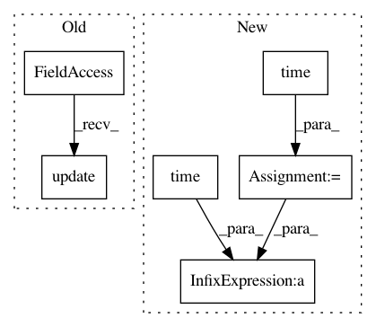

1657df9da12fe0861fa3d1e53e5b59cc57f73973,nussl/deep/train/trainer.py,Trainer,fit,#Trainer#,242
Before Change
else lowest_validation_loss
)
self.progress_bar.update(1)
self.progress_bar.set_description(f"Loss: {epoch_loss["loss"]:.4f}")
def validate(self, key) -> float:
After Change
fit_start_time = time.time()
for self.num_epoch in range(self.num_epoch, self.options["num_epochs"]):
start_time = time.time()
epoch_loss = self.run_epoch("training")
self.log_to_tensorboard(epoch_loss, self.num_epoch, "epoch")
validation_loss = self.validate("validation")
self.save(validation_loss["loss"] < lowest_validation_loss)
lowest_validation_loss = (
validation_loss["loss"]
if validation_loss["loss"] < lowest_validation_loss
else lowest_validation_loss
)
epoch_elapsed_time = time.time() - start_time
epoch_elapsed_time = time.strftime("%H:%M:%S", time.gmtime(epoch_elapsed_time))
full_elapsed_time = time.time() - fit_start_time
full_elapsed_time = time.strftime("%H:%M:%S", time.gmtime(full_elapsed_time))
In pattern: SUPERPATTERN
Frequency: 3
Non-data size: 6
Instances
Project Name: interactiveaudiolab/nussl
Commit Name: 1657df9da12fe0861fa3d1e53e5b59cc57f73973
Time: 2019-06-17
Author: prem@u.northwestern.edu
File Name: nussl/deep/train/trainer.py
Class Name: Trainer
Method Name: fit
Project Name: rodluger/starry
Commit Name: db3067d949df09adf08e48d5a854fd4643ed900a
Time: 2018-09-11
Author: rodluger@gmail.com
File Name: tex/figures/speed.py
Class Name:
Method Name: compare_to_numerical
Project Name: rodluger/starry
Commit Name: db3067d949df09adf08e48d5a854fd4643ed900a
Time: 2018-09-11
Author: rodluger@gmail.com
File Name: tex/figures/speed.py
Class Name:
Method Name: speed